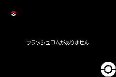

Pokemon - Doel Deoxys Distribution (Netherlands) (En) (Kiosk)
Flash 512K gbakit Built-In ⏰ Real-Time Clock (RTC) 💾 MultiBoot 🎮 4P Link
Cartridge Identity
- Game Code
BUUJ(FamilyBUU)- Header Title
Unknown- Maker / Revision
01/ rev0- ROM Size
- 4.0 MiB (4,194,304 B)
- Save Media
Flash 512K- SHA-256
121e0938a374d57c85657d8e710e6f73b40e6e6e7b3af44af9925c1758717f01
Screenshots


Cartridge Hardware & Physical Peripherals
This cartridge PCB features physical hardware peripherals: ⏰ Real-Time Clock (RTC).
Detailed register specifications, GPIO pinouts, and hardware architecture are available in the Cartridge Hardware Reference.
- RTC SDK Signature
SIIRTC_V001at offset0x006208- Cartridge GPIO Port
0x080000C4(GPIO_PORT_DIRECTION) · 4 load instruction references in code- Cartridge GPIO Port
0x080000C6(GPIO_PORT_DATA) · 4 load instruction references in code- Cartridge GPIO Port
0x080000C8(GPIO_PORT_CONTROL) · 2 load instruction references in code
Link Cable & Multiplayer Communications
This title contains detected communication capabilities: 💾 MultiBoot 🎮 4P Link.
Detailed protocol specifications, SIO registers, Joybus commands, and MultiBoot sequences are documented in the Link & Multiplayer Reference.
- Multi-Player SIO (4P)
- 16-bit ring network · SIOCNT (
0x04000128) literals:0x00169c,0x0016f8,0x001ac4· SIODATA32/SIOMULTI0 (0x04000120) literals:0x0017b8,0x00181c,0x001888 - Single-Cart MultiBoot
- Single-Cartridge MultiBoot (Download Play) client/server handler · Thumb SWI 0x25 (
0xDF25):0x002106,0x00fb08
Battery Save Support in gbakit
Built-in definition (BUUJ)
gbakit save verify BUUJ save.sav
gbakit save decode BUUJ save.sav
gbakit save fix BUUJ damaged.sav -o repaired.savAsset Map (formatkit.asset-map.v1)
Download BUUJ-r0-bef4d1eb555db502.asset-map.json.gz (3,064 B (3.0 KiB)) Verified PASS · 99.23% coverage
| Metric | Bytes / Value | Entries |
|---|---|---|
| Identified | 34,468 B (33.7 KiB) (0.82%) | 23 |
| Mapped | 0 B (0.00%) | 0 |
| Opaque | 4,127,680 B (3.94 MiB) (98.41%) | 1 |
| Unknown | 32,156 B (31.4 KiB) (0.77%) | 20 |
| Total ROM Size | 4,194,304 B (4.00 MiB) | 44 |
| Coverage % | 99.23% | — |
| Entries w/ Code Refs | 23 / 44 (52.27%) | — |
Top Identified Formats: rom.multiboot (1 · 31,684 B (30.9 KiB)) · gfx.gba-palette (21 · 2,592 B (2.5 KiB)) · gba.rom-header (1 · 192 B)
Largest unknown Extents (Headerless / Custom Asset Candidates)
| Offset | Size | Shannon Entropy | Code Refs |
|---|---|---|---|
0x00005E74 | 10,500 B (10.3 KiB) | 3.134 bits/B | 0 |
0x000000C0 | 10,384 B (10.1 KiB) | 6.467 bits/B | 0 |
0x0000379C | 8,928 B (8.7 KiB) | 1.919 bits/B | 0 |
0x00002B48 | 1,280 B (1.2 KiB) | 3.881 bits/B | 0 |
0x00002970 | 440 B | 3.086 bits/B | 0 |
gzip -dk BUUJ-r0-bef4d1eb555db502.asset-map.json.gz && gbakit map verify rom.gba BUUJ-r0-bef4d1eb555db502.asset-map.json
gbakit assets export rom.gba --asset-map BUUJ-r0-bef4d1eb555db502.asset-map.json -o out/Text, Fonts & Scene Data
- Primary Text Encoding
- Compressed / custom-encoded text
- Font & VWF Indicators
- No VWF Table No 1bpp Font · BIOS SWIs: BitUnPack
0x10:21· LZ770x11/12:11· Huffman0x13:1· RLE0x14/15:10 - Scene & Packaging
0ROM pointer tables (≥32 entries,0≥200) ·0relativeu32TOCs ·19OAM metasprite hits
Hardware MMIO Subsystems
ppu_display0x8000600save_bus_sram_flash0x8002154
Regional Variants & Revisions (Family BUU)
- Pokemon - 10th Anniversary Distribution (Europe) (Kiosk) (
BUUJ, 4 MiB) - Pokemon - 10th Anniversary Distribution (France) (Kiosk) (
BUUJ, 4 MiB) - Pokemon - 10th Anniversary Distribution (Germany) (Kiosk) (
BUUJ, 4 MiB) - Pokemon - 10th Anniversary Distribution (Italy) (Kiosk) (
BUUJ, 4 MiB) - Pokemon - 10th Anniversary Distribution (Spain) (Kiosk) (
BUUJ, 4 MiB) - Pokemon - Aura Mew Distribution (Europe) (Kiosk) (
BUUJ, 4 MiB) - Pokemon - Aura Mew Distribution (France) (Kiosk) (
BUUJ, 4 MiB) - Pokemon - Aura Mew Distribution (Germany) (Kiosk) (
BUUJ, 4 MiB) - Pokemon - Aura Mew Distribution (Italy) (Kiosk) (
BUUJ, 4 MiB) - Pokemon - Aura Mew Distribution (Spain) (Kiosk) (
BUUJ, 4 MiB)